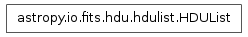

Bases: list, astropy.io.fits.verify._Verify
HDU list class. This is the top-level FITS object. When a FITS file is opened, a HDUList object is returned.
Append a new HDU to the HDUList.
| Parameters : | hdu : instance of _BaseHDU
|
|---|
Close the associated FITS file and memmap object, if any.
| Parameters : | output_verify : str
verbose : bool
closed : bool
|
|---|
Returns a dictionary detailing information about the locations of the indexed HDU within any associated file. The values are only valid after a read or write of the associated file with no intervening changes to the HDUList.
| Parameters : | index : int
|
||||||||||||||||
|---|---|---|---|---|---|---|---|---|---|---|---|---|---|---|---|---|---|
| Returns : | fileinfo : dict or None
|
Return the file name associated with the HDUList object if one exists. Otherwise returns None.
| Returns : | filename : a string containing the file name associated with the
|
|---|
Force a write of the HDUList back to the file (for append and update modes only).
| Parameters : | output_verify : str
verbose : bool
|
|---|
Creates an HDUList instance from a file-like object.
The actual implementation of fitsopen(), and generally shouldn’t be used directly. Use open() instead (and see its documentation for details of the parameters accepted by this method).
Creates an HDUList instance from a string or other in-memory data buffer containing an entire FITS file. Similar to HDUList.fromfile(), but does not accept the mode or memmap arguments, as they are only relevant to reading from a file on disk.
This is useful for interfacing with other libraries such as CFITSIO, and may also be useful for streaming applications.
| Parameters : | data : str, buffer, memoryview, etc.
kwargs : dict
|
|---|---|
| Returns : | hdul : HDUList
|
Get the index of an HDU from the HDUList.
| Parameters : | key : int, str or tuple of (string, int)
|
|---|---|
| Returns : | index : int
|
Summarize the info of the HDUs in this HDUList.
Note that this function prints its results to the console—it does not return a value.
| Parameters : | output : file, optional
|
|---|
Insert an HDU into the HDUList at the given index.
| Parameters : | index : int
hdu : _BaseHDU instance
|
|---|
Read data of all HDUs into memory.
Make sure that if the primary header needs the keyword EXTEND that it has it and it is correct.
Write the HDUList to a new file.
| Parameters : | fileobj : file path, file object or file-like object
output_verify : str
clobber : bool
checksum : bool
|
|---|